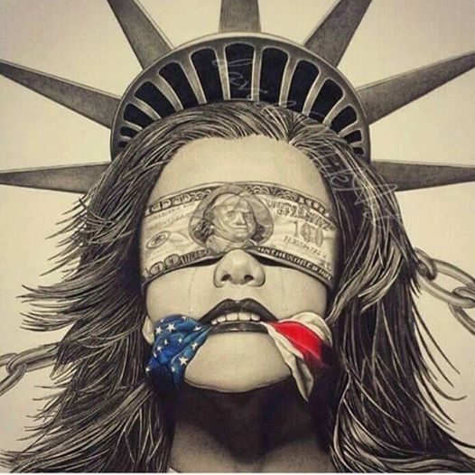
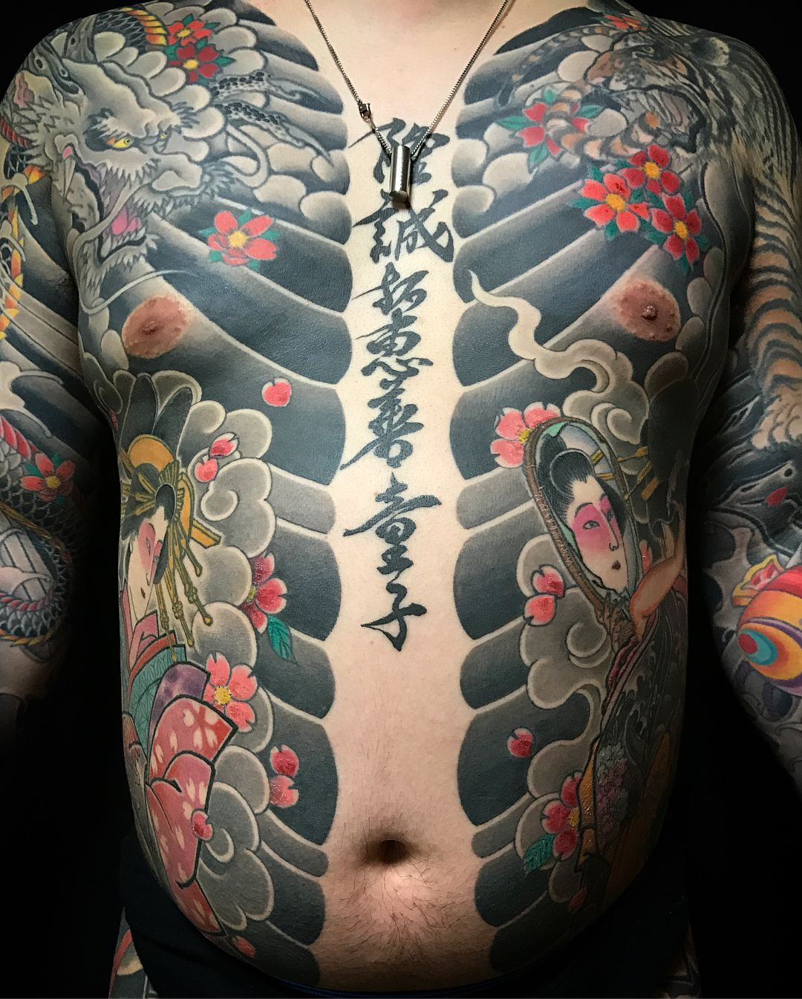
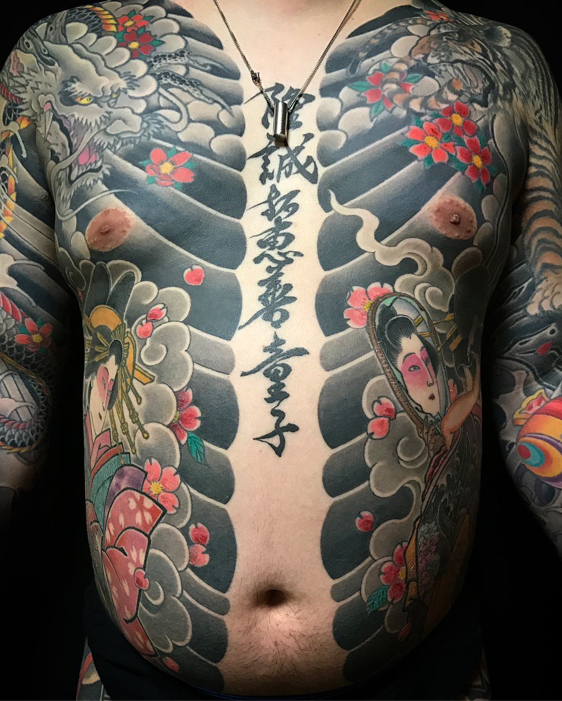
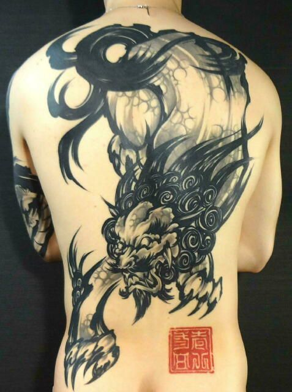
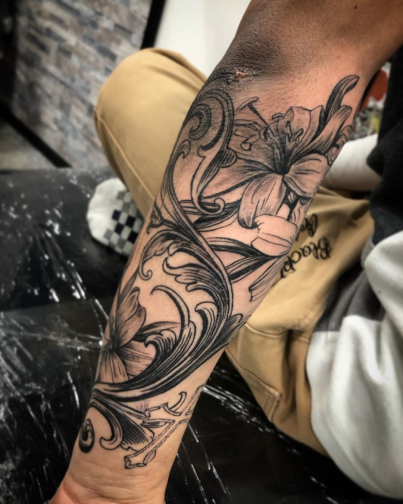
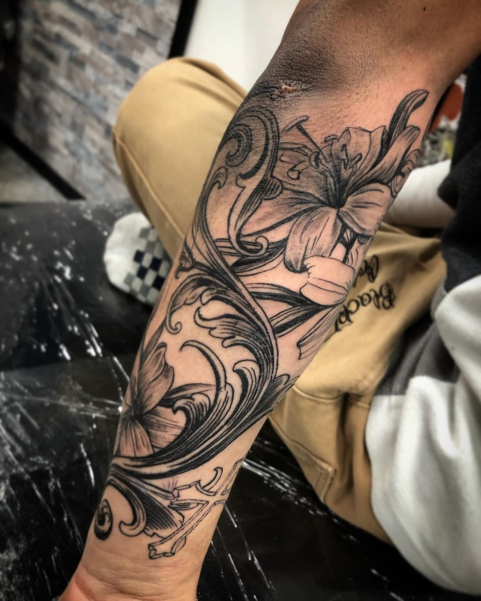

Tattoo
About
知っておくべきこと
価値観の変化
多くの人は、歳を重ねるとともに価値観が変わります。
つまり、現在はタトゥーにポジティブな想いがあったとしても、将来どうなっているかは誰にも分かりません。
何気ないきっかけでファーストタトゥーを入れ、数年後にジレンマを抱える人は多いです。（父・母になったときなど）
※もちろんその逆も然り、生涯にわたって自分の個性であるタトゥーを愛し続ける人もいます。
簡単に消せない（消せても高額な費用が掛かる）
一度入れると中々消せないというのも、後悔する理由のひとつですね。 厳密に言うと、頑張れば消せます。また、現代の医療技術を持ってすれば、かなり綺麗に消すことも可能です。 しかしながら、刺青除去は保険適用外なので“費用がかなり高い”です。それだけでなく、何度も通院する必要があり、時間もかかってしまいます。
原因社会的な偏見にうんざりする
社会的な偏見も大きな原因のひとつでしょう。日本は欧米諸国と比べると極端な偏見がありますよ。 反社会的勢力を想起させる大きな和彫りだけでなく、お洒落なワンポイントタトゥーでもイメージは悪いです。（タトゥーを入れること自体がマイナスに捉えられる。） 有名人など特別な生活を送る人ならまだしも、皆がそうではありません。少なからず一般社会の生活においては、それなりに肩身の狭さを感じることがあります。

Type
和彫り
先ずは一発目、我らが日本代表、和彫りです。 全身に纏うようなデザインが特徴の和彫りは、そのデザイン性と歴史的背景より、世界的に非常に評価が高いです。

 


トライバルタトゥー
トライバルタトゥーは和彫りに次ぐ、日本でも親しみのあるタトゥーのスタイルではないかと思います。 またトライバルタトゥーの中でもサモア、ハイダ、ボルネオ等、国や諸島ごとに分岐していきます。

ブラックアンドグレイ
ブラックアンドグレイは世界的に非常に人気です。 要は単色のインクの濃淡のみで描かれるスタイルです。 ちなみにギャングのタトゥーである「チカーノタトゥー」というスタイルも、このブラックアンドグレイに属しています。
 

Shop
おすすめのお店や彫師を紹介したいのですが、正直ありません。 お店や彫師によって得意としているスタイルがまるで違うので、一概には言えないのです。
ここではアーティストの選び方や注意点を紹介していきます。
タトゥーの価格

タトゥーの価格というのは、「安いスタジオを選ぼう」という意味ではなく、「正当な金額でタトゥー施術を行なっているか」という意味です。 1時間5,000円〜等の格安で施術しているところには理由がありますし、逆に高いところにもそれなりの理由があります。 DOTTではタトゥーの平均価格を記事にまとめていますので、こちらを是非参考に比較して下さい。
アーティストの技術

タトゥーは、振動が激しいというタトゥーマシンの性質上、「まっすぐな線を引くのは難しい」とされています。 線に迷いが出ているもの、ゆらゆらした波線になっているもの、太さが均一ではないもの等が目立つアーティストは、比較的経験の浅い多い傾向にあります。 ※あえてそのような書き方をされている方もいます。